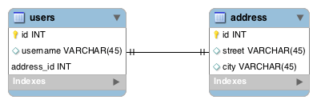
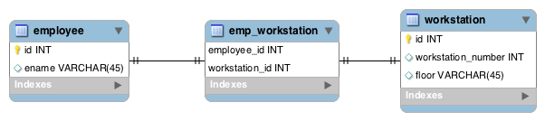
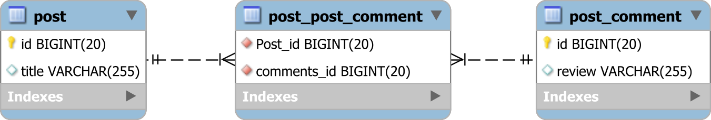

10. Spring Boot Entity¶
10.1. 概要¶
JPA中的实体(Entity)就是是POJO，代表可以持久保存到数据库里的数据。 实体表示存储在数据库中的表。 实体的每个实例都对应表中的一行。
10.2. Entity¶
实体(Entity)中必须要有一个无参的构造函数和一个主键:
@Entity(name="Student")
@Table(name="STUDENT", schema="SCHOOL")
public class Student {
@CreatedDate
private Date creationDate;
@LastModifiedDate
private Date modificationDate;
@Column(name="STUDENT_NAME", length=50, nullable=false, unique=false)
private String name;
// fields, getters and setters
}
Entity名称默认为类的名称，可以使用name元素更改其名称。name对应HQL里面的查询Entity。
Table名称默认为类的名称，可以使用name元素更改其名称。name对应DB里面的表名。
因为各种JPA实现都将尝试对我们的Entity进行子类化以提供其功能，所以不得将Entity类声明为final。
每个Entity都必须具有一个唯一标识它的主键。
默认构造函数
如果没有创建构造函数，则Java编译器将在运行时自动创建无参数构造函数。 此构造函数称为默认构造函数。 默认构造函数将初始化所有未初始化的实例变量。
10.2.1. Annotation¶
10.2.1.1. @Id¶
@Entity
public class User {
@Id
@GeneratedValue(strategy = GenerationType.AUTO)
private long id;
// private UUID id;
@Id
@GenericGenerator(name = "idGenerator", strategy = "uuid")
@GeneratedValue(generator = "idGenerator")
private String id;
// getters and setters
}
JPA自带的几种主键生成策略:
TABLE： 使用一个特定的数据库表格来保存主键
SEQUENCE： 根据底层数据库的序列来生成主键，条件是数据库支持序列。这个值要与generator一起使用，generator 指定生成主键使用的生成器（可能是orcale中自己编写的序列）
IDENTITY： 主键由数据库自动生成（主要是支持自动增长的数据库，如mysql）
AUTO： 主键由程序控制，也是GenerationType的默认值
10.2.1.2. @CreatedDate¶
需要在Entity上添加@EntityListeners标签，以及在Configuration类上添加@EnableJpaAuditing标签，如下所示：
1 2 3 4 5 6 7 8 9 10 11 12 13 14 15 16 17 18 19 20 21 22 23 24 25 26 27 | @Entity(name="Student")
@Table(name="STUDENT", schema="SCHOOL")
@EntityListeners(AuditingEntityListener.class)
public class Student {
@CreatedDate
private Date creationDate;
@LastModifiedDate
private Date modificationDate;
@Column(name="STUDENT_NAME", length=50, nullable=false, unique=false)
private String name;
// fields, getters and setters
}
@SpringBootApplication
@EnableJpaAuditing
public class DemoApplication {
public static void main(String[] args) {
SpringApplication.run(DemoApplication.class, args);
}
}
|
10.2.1.3. @Column¶
1 2 3 4 5 6 7 8 9 10 11 12 | @Entity
@Table(name="STUDENT")
public class Student {
@Id
@GeneratedValue(strategy=GenerationType.AUTO)
private Long id;
@Column(name="STUDENT_NAME", length=50, nullable=false, unique=false)
private String name;
// other fields, getters and setters
}
|
10.2.1.4. @Transient¶
有时，我们可能希望将字段设为非持久性。 我们可以使用@Transient注解，它指定该字段将不会持久化到数据库。如Entity中同时有个出生年月和年龄2个字段，一般情况下，仅需要将出生年月持久化到数据库，年龄字段作为逻辑字段，不持久化到数据库。
10.2.1.5. @Temporal¶
@Temporal的作用是查询时，返回的字段值按照指定日期的格式显示，示例：
1 2 3 4 5 6 7 8 9 10 11 12 13 14 15 | @Entity
@Table(name="STUDENT")
public class Student {
@Id
@GeneratedValue(strategy=GenerationType.AUTO)
private Long id;
@Transient
private Integer age;
@Temporal(TemporalType.DATE)
private Date birthDate;
// other fields, getters and setters
}
|
TemporalType有这么几种值： java.time.LocalDate, java.time.LocalTime, java.time.LocalDateTime, java.time.OffsetTime 和 java.time.OffsetDateTime.
在该属性上标注@Temporal(TemporalType.DATE) 会得到形如’yyyy-MM-dd’ 格式的日期。
在该属性上标注 @Temporal(TemporalType.TIME) 会得到形如’HH:MM:SS’ 格式的日期。
在该属性上标注 @Temporal(TemporalType.TIMESTAMP) 会得到形如’HH:MM:SS’ 格式的日期。
10.2.1.6. @Enumerated¶
1 2 3 4 5 6 7 8 9 10 11 12 13 14 15 16 17 18 19 20 21 22 23 24 25 26 | public enum Gender {
MALE,
FEMALE
}
@Entity
@Table(name="STUDENT")
public class Student {
@Id
@GeneratedValue(strategy=GenerationType.AUTO)
private Long id;
@Column(name="STUDENT_NAME", length=50, nullable=false, unique=false)
private String name;
@Transient
private Integer age;
@Temporal(TemporalType.DATE)
private Date birthDate;
@Enumerated(EnumType.STRING)
private Gender gender;
// other fields, getters and setters
}
|
10.3. 日期处理¶
Spring Boot中未设置日期格式之前，前端接收到的时间戳：createTime：1425300054855
有下面几种方式指定日期格式：
10.3.1. 配置文件中配置¶
spring.jacksondate-format = yyyy-MM-dd HH:mm:ss
10.3.2. @JsonFormat¶
1 2 | @JsonFormat(pattern="yyyy-MM-dd HH:mm")
private Date createTime;
|
10.3.3. @DateTimeFormat¶
1 2 | @DateTimeFormat(pattern = "yyyy-MM-dd")
private Date createTime;
|
@DateTimeFormat 格式化日期需要注意的是：使用时要引入一个类库joda-time-1.3.jar，否则会无法访问相应路径(400错误)。
10.3.4. @Temporal¶
详细内容参照上面的@Temporal讲解部分。
10.4. Relationship¶
JPA关系可以是单向或双向的。这只是意味着我们可以将它们的关系建模在实体属性的一方或者双方。主要区别在于，双向关系提供了双向导航访问，因此您无需显式查询即可访问另一侧。此外，它还允许您在两个方向上应用级联选项。 定义实体之间关系的方向不会影响数据库映射，它仅定义了在域模型中使用该关系的方向，节省了维护代码的成本。
模型关系的定义可能会迫使数据库创建除表之外的其他资源，如索引，触发器等。
@JoinColumn注解指定用于连接关联的实体或元素的集合，它声明在Owner方。
mappedBy属性用于定义关系维护的refering方（non-owning side）。
mappedBy与@JoinColumn和@JoinTable互斥，不能同时作用于同一个属性上。
10.4.1. one-to-one¶
本文将介绍3种方式描述JPA的一对一（OneToOne）关系。
在单向(unidirectional)映射中，拥有方的表结构必须包含一个JoinColumn列，该JoinColumn列引用另一个表的ID；
在双向(bidirectional)映射中，Owner和非Owner都必须有@OneToOne注解，其中非Owner实体必须包含mappedBy属性。
10.4.1.1. Foreign Key¶
这是2个表的ER图：
{kind=link}
User表中有个外键字段“address_id”，它的值指向的是address表中的主键“id”。
10.4.1.1.1. Unidirectional¶
Unidirectional简单的讲，就是讲关系配置在Owner方。
1 2 3 4 5 6 7 8 9 10 11 12 13 14 15 16 | @Entity
@Table(name = "users")
public class User {
@Id
@GeneratedValue(strategy = GenerationType.AUTO)
@Column(name = "id")
private Long id;
//...
@OneToOne(cascade = CascadeType.ALL)
@JoinColumn(name = "address_id", referencedColumnName = "id")
private Address address;
// ... getters and setters
}
|
1 2 3 4 5 6 7 8 9 10 11 12 | @Entity
@Table(name = "address")
public class Address {
@Id
@GeneratedValue(strategy = GenerationType.AUTO)
@Column(name = "id")
private Long id;
//...
//... getters and setters
}
|
10.4.1.1.2. Bidirectional¶
Bidirectional关系需要双方都要配置，这里在Unidirectional的基础上需要另外在非Owner端添加@OneToOne注解：
1 2 3 4 5 6 7 8 9 10 11 12 13 14 15 | @Entity
@Table(name = "address")
public class Address {
@Id
@GeneratedValue(strategy = GenerationType.AUTO)
@Column(name = "id")
private Long id;
//...
@OneToOne(mappedBy = "address")
private User user;
//... getters and setters
}
|
请注意：
@JoinColumn注解在User端，表示User是Owner端；
@JoinColumn注解中name属性用于定义外键的名称，这里表示User表中有个列名为“address_id”。 如果我们不提供名称，那么Hibernate将遵循一些 规则 来选择默认名称。referencedColumnName = “id” 指示它映射到Address表中的主键“id”，默认是主键，因此referencedColumnName可以省略。
cascade=CascadeType.ALL 表示级联维护关系，如当删除 user，会级联删除 address。
在实践中，mappedBy属性很重要，如果不配置（如仅配置@OneToOne），创建表时，会在Address表中额外添加”user_id“字段，同时2个实体的关系依然为Unidirectional。
10.4.1.1.3. CRUD操作¶
1 2 3 4 5 6 7 8 9 10 11 12 13 14 15 16 17 18 19 20 21 22 23 24 25 26 27 28 29 30 31 32 33 34 35 36 37 38 39 40 41 42 43 44 45 46 47 48 49 50 51 52 53 54 55 56 57 58 59 60 61 62 63 64 65 | @Repository
public interface UserRepository extends JpaRepository<User, Long> {
public User findByName(String name);
}
package com.example.demo.init;
import static org.junit.Assert.assertEquals;
import javax.annotation.PostConstruct;
import org.slf4j.Logger;
import org.slf4j.LoggerFactory;
import org.springframework.beans.factory.annotation.Autowired;
import org.springframework.stereotype.Component;
import com.example.demo.entity.Address;
import com.example.demo.entity.User;
import com.example.demo.repository.AddressRepository;
import com.example.demo.repository.UserRepository;
@Component
public class PostConstructExampleBean {
private static final Logger logger = LoggerFactory.getLogger(PostConstructExampleBean.class);
@Autowired
private UserRepository userRepository;
@Autowired
private AddressRepository addressRepository;
@PostConstruct
public void init() {
logger.info("init....");
// given
User user1 = new User();
user1.setName("user1");
userRepository.save(user1);
User user2 = new User();
user2.setName("user2");
Address address = new Address();
address.setStreet("Soft City No.1");
user2.setAddress(address);
userRepository.save(user2);
// 查询user1
User found1 = userRepository.findByName(user1.getName());
assertEquals(found1.getName(), user1.getName());
// 查询user2, 然后获得它的关联实体
User found2 = userRepository.findByName(user2.getName());
assertEquals(found2.getAddress().getStreet(), address.getStreet());
// 查询Address, 然后获得它的关联实体
Address found3 = addressRepository.findByStreet(address.getStreet());
assertEquals(found3.getUser().getName(), user2.getName());
logger.info("init....over....");
}
}
|
请注意：
Unidirectional与Bidirectional的区别就是查询的方向，Unidirectional只能是Owner到非Owner端查询，Bidirectional是双向可以查询。
无论是Unidirectional还是Bidirectional，创建的表结构是相同的。
{kind=link}
10.4.1.3. Join Table¶
到目前为止，我们已经讨论过的策略允许空值存在，使用联接表可以帮助我们消除这些空值：
{kind=link}
1 2 3 4 5 6 7 8 9 10 11 12 13 14 15 16 17 18 19 20 | @Entity
@Table(name = "employee")
public class Employee {
@Id
@GeneratedValue(strategy = GenerationType.AUTO)
@Column(name = "id")
private Long id;
//...
@OneToOne(cascade = CascadeType.ALL)
@JoinTable(name = "emp_workstation",
joinColumns =
{ @JoinColumn(name = "employee_id", referencedColumnName = "id") },
inverseJoinColumns =
{ @JoinColumn(name = "workstation_id", referencedColumnName = "id") })
private WorkStation workStation;
//... getters and setters
}
|
1 2 3 4 5 6 7 8 9 10 11 12 13 14 15 16 | @Entity
@Table(name = "workstation")
public class WorkStation {
@Id
@GeneratedValue(strategy = GenerationType.AUTO)
@Column(name = "id")
private Long id;
//...
@OneToOne(mappedBy = "workStation")
private Employee employee;
//... getters and setters
}
|
Employee is the owner of this relationship as we chose to use the @JoinTable annotation on it.
如果不需要根据WorkStation级联查询Employee，可以注释掉WorkStation类中的“employee”字段（包括@OneToOne注解）。
10.4.2. one-to-many¶
JPA使用@OneToMany和@ManyToOne来标识一对多的双向关联。一端(Author)使用@OneToMany,多端(Article)使用@ManyToOne。
在JPA规范中，一对多的双向关系由多端(Article)来维护。就是说多端(Article)为关系 维护端，负责关系的增删改查。一端(Author)则为关系 被维护端，不能维护关系。
1 2 3 4 5 6 7 8 9 10 11 12 13 14 | @Entity
public class Author {
@Id // 主键
@GeneratedValue(strategy = GenerationType.IDENTITY) // 自增长策略
private Long id; //id
private String name;//姓名
@OneToMany(mappedBy = "author",cascade=CascadeType.ALL,fetch=FetchType.LAZY)
//级联保存、更新、删除、刷新;延迟加载。当删除用户，会级联删除该用户的所有文章
//拥有mappedBy注解的实体类为关系被维护端
//mappedBy="author"中的author是Article中的author属性
private List<Article> articleList;//文章列表
}
|
1 2 3 4 5 6 7 8 9 10 11 12 13 14 | @Entity
public class Article {
@Id
@GeneratedValue(strategy = GenerationType.IDENTITY) // 自增长策略
@Column(name = "id", nullable = false)
private Long id;
private String title;
//可选属性optional=false,表示author不能为空。删除文章，不影响用户
@ManyToOne(cascade={CascadeType.MERGE,CascadeType.REFRESH},optional=false)
@JoinColumn(name="author_id")//设置在article表中的关联字段(外键)
private Author author;//所属作者
}
|
10.4.2.1. Unidirectional¶
1 2 3 4 5 6 7 8 9 10 11 12 13 14 15 16 17 18 19 20 21 22 23 24 25 26 27 28 | @Entity(name = "Post")
@Table(name = "post")
public class Post {
@Id
@GeneratedValue
private Long id;
private String title;
@OneToMany(cascade = CascadeType.ALL, orphanRemoval = true)
private List<PostComment> comments = new ArrayList<>();
//Constructors, getters and setters removed for brevity
}
@Entity(name = "PostComment")
@Table(name = "post_comment")
public class PostComment {
@Id
@GeneratedValue
private Long id;
private String review;
//Constructors, getters and setters removed for brevity
}
|
现在，我们尝试创建1条Post和3条PostComment记录：
1 2 3 4 5 6 7 8 9 10 11 12 13 | Post post = new Post("First post");
post.getComments().add(
new PostComment("My first review")
);
post.getComments().add(
new PostComment("My second review")
);
post.getComments().add(
new PostComment("My third review")
);
entityManager.persist(post);
|
底层的Hibernate将会执行下面的SQL：
1 2 3 4 5 6 7 | insert into post (title, id) values ('First post', 1)
insert into post_comment (review, id) values ('My first review', 2)
insert into post_comment (review, id) values ('My second review', 3)
insert into post_comment (review, id) values ('My third review', 4)
insert into post_post_comment (Post_id, comments_id) values (1, 2)
insert into post_post_comment (Post_id, comments_id) values (1, 3)
insert into post_post_comment (Post_id, comments_id) values (1, 4)
|
从上面的SQL语句看，将会创建3张表，类似下图所示：
{kind=link}
对于DBA，这看起来更像是多对多数据库关联，而不是一对多关系，而且效率也不高。 现在，有了三个表，而不是两个表，因此使用了不必要的存储空间。 现在，多了两个外键，有可能对这些外键建立索引，因此将需要两倍的内存来缓存此关联的索引。 此方案不是很好！
10.4.2.2. Unidirectional with @JoinColumn¶
要解决上述额外的联接表问题，只需要添加@JoinColumn：
1 2 3 | @OneToMany(cascade = CascadeType.ALL, orphanRemoval = true)
@JoinColumn(name = "post_id")
private List<PostComment> comments = new ArrayList<>();
|
有了此注释，持久化1个Post和3个PostComment实体时，将获得以下SQL输出：
1 2 3 4 5 6 7 | insert into post (title, id) values ('First post', 1)
insert into post_comment (review, id) values ('My first review', 2)
insert into post_comment (review, id) values ('My second review', 3)
insert into post_comment (review, id) values ('My third review', 4)
update post_comment set post_id = 1 where id = 2
update post_comment set post_id = 1 where id = 3
update post_comment set post_id = 1 where id = 4
|
好一点了，但是多了三个更新语句。
If you take a look at Hibernate flush order, you’ll see that the persist action is executed before the collection elements are handled. This way, Hibernate inserts the child records first without the Foreign Key since the child entity does not store this information. During the collection handling phase, the Foreign Key column is updated accordingly.
The same logic applies to collection state modifications, so when removing the firsts entry from the child collection:
1 | post.getComments().remove(0);
|
Hibernate executes two statements instead of one:
1 2 | update post_comment set post_id = null where post_id = 1 and id = 2
delete from post_comment where id=2
|
Again, the parent entity state change is executed first, which triggers the child entity update. Afterward, when the collection is processed, the orphan removal action will execute the child row delete statement.
10.4.2.3. Bidirectional(推荐)¶
The best way to map a @OneToMany association is to rely on the @ManyToOne side to propagate all entity state changes:
1 2 3 4 5 6 7 8 9 10 11 12 13 14 15 16 17 18 19 20 21 22 23 24 25 26 27 28 29 30 31 32 33 34 35 36 37 38 39 40 41 42 43 44 45 46 47 48 49 50 51 52 53 54 55 56 57 | @Entity(name = "Post")
@Table(name = "post")
public class Post {
@Id
@GeneratedValue
private Long id;
private String title;
@OneToMany(
mappedBy = "post",
cascade = CascadeType.ALL,
orphanRemoval = true
)
private List<PostComment> comments = new ArrayList<>();
//Constructors, getters and setters removed for brevity
public void addComment(PostComment comment) {
comments.add(comment);
comment.setPost(this);
}
public void removeComment(PostComment comment) {
comments.remove(comment);
comment.setPost(null);
}
}
@Entity(name = "PostComment")
@Table(name = "post_comment")
public class PostComment {
@Id
@GeneratedValue
private Long id;
private String review;
@ManyToOne(fetch = FetchType.LAZY)
@JoinColumn(name = "post_id")
private Post post;
//Constructors, getters and setters removed for brevity
@Override
public boolean equals(Object o) {
if (this == o) return true;
if (!(o instanceof PostComment )) return false;
return id != null && id.equals(((PostComment) o).getId());
}
@Override
public int hashCode() {
return 31;
}
}
|
There are several things to note on the aforementioned mapping:
The @ManyToOne association uses FetchType.LAZY because, otherwise, we’d fall back to EAGER fetching which is bad for performance.
The parent entity, Post, features two utility methods (e.g. addComment and removeComment) which are used to synchronize both sides of the bidirectional association. You should always provide these methods whenever you are working with a bidirectional association as, otherwise, you risk very subtle state propagation issues.
The child entity, PostComment, implement the equals and hashCode methods. Since we cannot rely on a natural identifier for equality checks, we need to use the entity identifier instead. However, you need to do it properly so that equality is consistent across all entity state transitions. Because we rely on equality for the removeComment, it’s good practice to override equals and hashCode for the child entity in a bidirectional association.
If we persist three PostComment(s):
1 2 3 4 5 6 7 8 9 10 11 12 13 | Post post = new Post("First post");
post.addComment(
new PostComment("My first review")
);
post.addComment(
new PostComment("My second review")
);
post.addComment(
new PostComment("My third review")
);
entityManager.persist(post);
|
Hibernate generates just one SQL statement for each persisted PostComment entity:
1 2 3 4 | insert into post (title, id) values ('First post', 1)
insert into post_comment (post_id, review, id) values (1, 'My first review', 2)
insert into post_comment (post_id, review, id) values (1, 'My second review', 3)
insert into post_comment (post_id, review, id) values (1, 'My third review', 4)
|
If we remove a PostComment:
1 2 3 4 | Post post = entityManager.find( Post.class, 1L );
PostComment comment1 = post.getComments().get( 0 );
post.removeComment(comment1);
|
There’s only one delete SQL statement that gets executed:
1 | delete from post_comment where id = 2
|
So, the bidirectional @OneToMany association is the best way to map a one-to-many database relationship when we really need the collection on the parent side of the association.
10.4.3. many-to-many¶
类似上面的3表关联。
10.5. H2¶
1 2 3 4 | <dependency>
<groupId>com.h2database</groupId>
<artifactId>h2</artifactId>
</dependency>
|
10.5.1. 默认配置¶
启动Spring Boot时，控制台显示:
H2 console available at '/h2-console'. Database available at 'jdbc:h2:mem:testdb'
Spring Boot默认的完整H2配置如下:
spring.datasource.url=jdbc:h2:mem:testdb
spring.datasource.driverClassName=org.h2.Driver
spring.datasource.username=sa
spring.datasource.password=password
spring.jpa.database-platform=org.hibernate.dialect.H2Dialect
10.5.2. 更改H2控制台的路径¶
可以通过spring.h2.console.enabled来禁用H2控制台:
spring.h2.console.enabled=false
默认情况下，控制台位于/h2-console。您可以使用spring.h2.console.path属性自定义控制台的路径。
可以设置一个固定路径，通过指定spring.datasource.url属性:
spring.datasource.url=jdbc:h2:file:/data/demo
10.6. 初始化数据库数据¶
add a data.sql file in src/main/resources:
1 2 3 4 5 6 7 8 9 10 11 12 13 | DROP TABLE IF EXISTS billionaires;
CREATE TABLE billionaires (
id INT AUTO_INCREMENT PRIMARY KEY,
first_name VARCHAR(250) NOT NULL,
last_name VARCHAR(250) NOT NULL,
career VARCHAR(250) DEFAULT NULL
);
INSERT INTO billionaires (first_name, last_name, career) VALUES
('Aliko', 'Dangote', 'Billionaire Industrialist'),
('Bill', 'Gates', 'Billionaire Tech Entrepreneur'),
('Folrunsho', 'Alakija', 'Billionaire Oil Magnate');
|